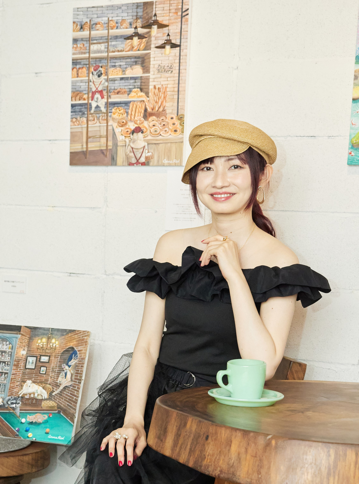
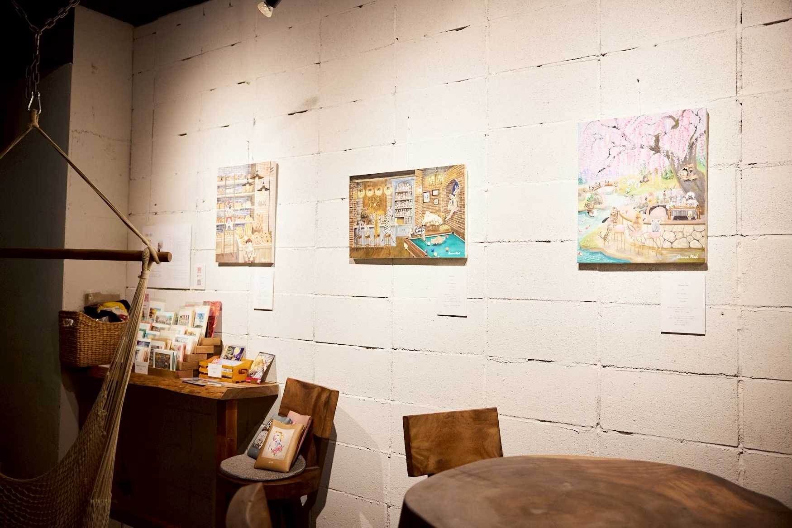

About
ANNA RED
Contemporary Artist
色と物語で描く日常のファンタジー
東京を拠点に活動。
10年を超えて通い続けたオーストラリアでの暮らしや、 旅先でのストリートパフォーマンス、様々な経験を 通して出会った、心の動く瞬間を大切に描いてきました。
暮らしの中で生まれる、楽しさや美しさを、 物語としてキャンバスへ。



略歴
- 2013個展「Party」
-
2014
個展「ANNA REDはBARにいる」
西武渋谷店グループ展「シブヤスタイル vol.8」
個展「ANNA RED展」 -
2017
個展「ANNA RED in STEAM JUNKIES」（メルボルン）
個展「COLORS」 - 2018個展「木陰のノスタルジア」
- 2019個展「Art Break」（メルボルン）
- 2023個展「Fantasy10」
-
2024
個展「Fantasy10」（メルボルン）
個展「小さな世界」
個展「Wan Wan Carnival」
デザインフェスタ vol.60 -
2025
個展「僕らの行きつけ」
デザインフェスタ vol.61 vol.62 - 2026.2グループ展「SCRAP & BUILD」
- 他グループ展・アートイベント等に参加
受賞歴
- 2024第20回 世界絵画大賞展 ベステック賞